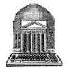
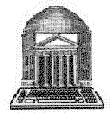
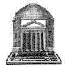

at the
University of Virginia
The core of the research collection consists of about 3,000 pecha volumes containing about 8,000 titles of texts. Since the late 1960s, these and other Tibetan materials have been systematically acquired, identified, marked, shelved, and circulated to Tibetan scholars. The pecha represent about 40% of the Tibetan collection. They are in the format of single sheets, block-printed on both sides of various qualities of paper, some bound, but most unbound. Another 40% are relatively uniform-size reprints of these pecha, bound as codexes. The remaining 20% are in Western book format. The collection currently resides in the Alderman Library basement. In addition there are a large number of secondary materials on Tibet in the Alderman stacks. Also in the Periodical Reading Room (3rd floor) are current issues of several Tibetan journals, while bound earlier issues are in the stacks.
A Tibetan Reference Room provides several reference tools to aid in the identification of texts and other information. These tools consist of dictionaries, encyclopedias, guides, catalogs, bibliographies, tables of contents (dkar chags), and other search and reference tools. The Room currently is on the second floor of Alderman Library.
Most of the titles of the Tibetan pecha volumes and other materials are accessible in VIRGO, the University of Virginia's online catalog system. All of these materials may be searched, identified, and circulated to Tibetan scholars for their research.
Most of the materials in the Tibetan collection are in the Tibetan language and script. Since nearly all of it was published in India, Bhutan, and Nepal, with extremely small press runs, this material is virtually irreplaceable, out of print, and unique.
The Tibetan materials cover a full range of subjects of Tibetan literature, consisting primarily of books on the many forms of Tibetan religion, mostly Buddhism. Other subjects covered include Tibetan language, Sanskrit language, and the principles of Tibetan Buddhist art and iconography.
To log into VIRGO, go to the U. of Virginia Library and click on the VIRGO link.
Scroll down to the second type of searching, 2. Keywords, where you may limit your searching to Tibetan language materials, by going to 'Language' and clicking on TIBETAN.
On the World Wide Web, there is a local information, links, and graphic Web page. Connect to this URL to view it -
http://www.lib.virginia.edu/area-studies/Tibet/tibet.html
And follow the links within it.